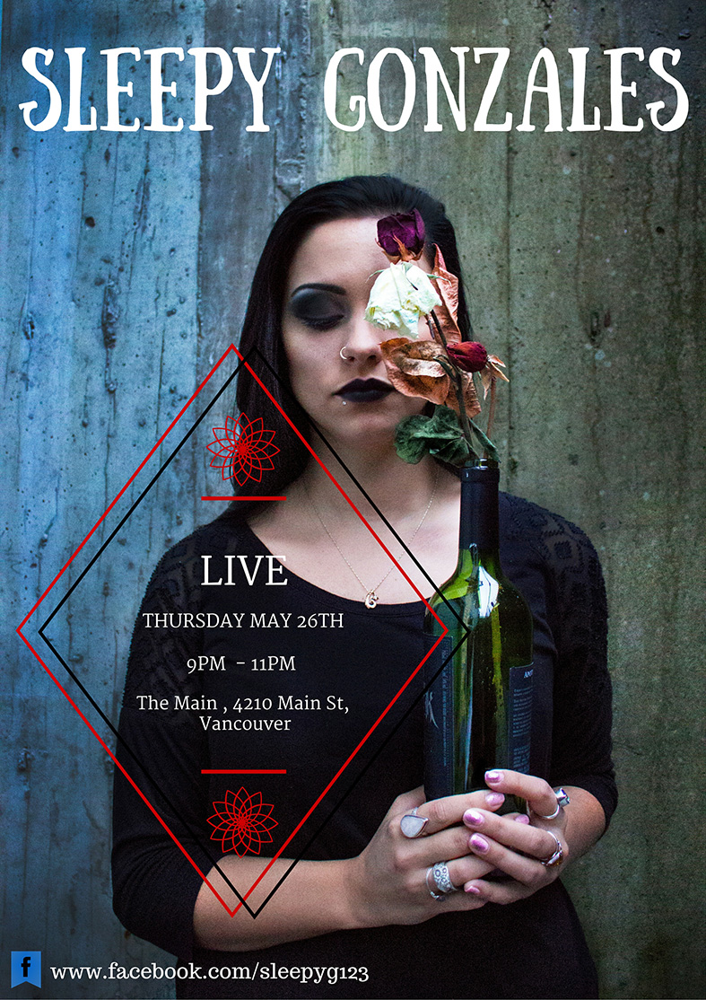

In 2016, being in a band comes along with challenges that do not necessarily
have to do with music. One of them is gaining a substantial social media
following. Unless you have one, the business side of the music industry
won't give you a second glance.
Bothering people to follow/like Sleepy Gonzales on all of the different
media platforms is probably our least favourite part of being in this band.
It just doesn't suite our individual personalities. So we are setting up
this Giveaway to offer something back to those who are helping us on the
path to being noticable. By participating in this Giveaway, it will
mean the world to us. In turn, you will be eligible to win a bunch of
free stuff.
A social media following will bring us one step closer to achieving our
goal of recording our first professionally produced LP.
This contest is running from May 26th-June-26th so we can gather more prizes and give more participants a chance to win something. We encourage everyone to email us at sleepygonzales123@gmail.com to suggest additional prizes.
Just shy of half an hour in duration, this EP was written and recorded
for the first annual
Effloresce Drama Festival at Douglas College. The festival, which was
completely student-led, raised thousands of dollars in donations for the
BC Children's Hospital Foundation.
Learn more about this project and have a listen:
Sleepy Gonzales is excited to announce that they will be playing a live set in the heart of downtown Vancouver. Admission is free all night, so spice up your Thursday evening with some live music and support the local arts. The poster below should answer all of your questions. Bring your friends. Bring your family. Bring that cutie from work that you've been thinking about asking on a date. Who knows, anything can happen. Maybe you will look back in thirty years and remember how you were both serenaded by Sleepy Gonzales on your first date.
We would like to give a special shout out to our good friend Alex Land for helping us
build this site, which we were able to do by ourselves thanks to his towering
intellect and his willingness to help.
May more people strive to be as magnificient as him.